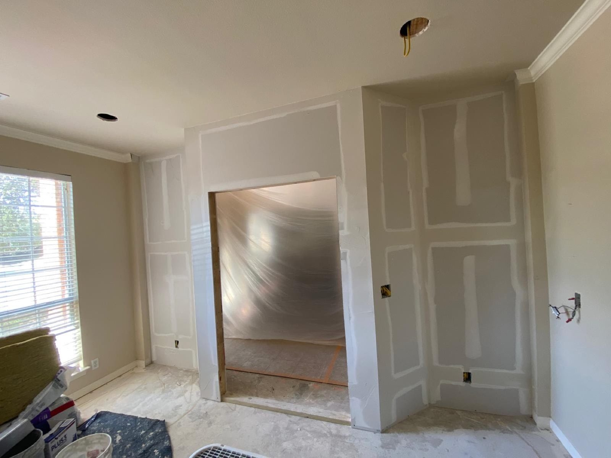

Drywall installation
New builds and remodels, from a couple of new walls to full tape, float and texture.
- New construction
- Hanging and taping
- Metal framing


ROA Drywall
We hang, tape, float and texture. Fast work, clean jobsite.
Get a free estimateCall (512) 293-9899
A note from the team
Quick to show up, careful with the finish, and the jobsite stays clean.
Our work
Installation, finishing and repair for homes and builds around Pflugerville and Austin.
New builds and remodels, from a couple of new walls to full tape, float and texture.
Smooth joints, clean corners and spray or hand texture that matches the wall around it.

Holes, cracks and storm or leak damage patched and textured to blend in.

Case studies


What clients wrote
4.8 · 66 Google reviews
I went through a lot of contractors. One wouldn't even come out, he wanted to give me an estimate over the phone without seeing the job. Another was more of a salesperson than a contractor, very pushy, telling me if I signed that day he'd give me a discount. I'm sure you've run into the same thing. As someone who's led projects and teams for over 25 years, I have an eye for quality.
We had such a great experience with Roa Drywall! As a local, family-owned business, Omar the owner truly takes pride in their work, and it shows! We hired them for spray foam, sheetrock installation, and the full tape, float, and texture process on our new build family home and they delivered beyond our expectations! Omar, the sheetrock installer, was especially wonderful to work with!
I highly recommend Omar and his crew. Omar is super easy to work with, so friendly and competitively priced. His crew is respectful, kept my jobsite clean and did beautiful and fast work. I had drywall installed with tape/ float and texture on a new build guest house. I will have Omar do the bathroom tile next and will update pictures when complete.
Omar came out within a day of me calling and had a team ready to go immediately to put up two new walls in our home. The crew worked quickly, did very high quality work, and cleaned up nicely when they were done. I plan to use them again next time I need drywall work done. Highly recommend!
About us
Family-owned and based in Pflugerville, serving Austin and Central Texas.
Installation, taping and finishing, texture, repairs, water damage, finish carpentry, painting and metal framing. Careful, fast and respectful work.

Hours & directions
1311 Golden Barley Dr, Pflugerville, TX 78660
We come to your project. Call to check that we cover your address.